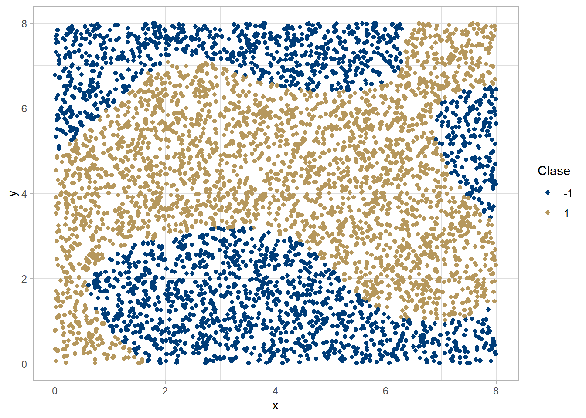

Capítulo 8 ¿Qué es una SVM?
Las maquinas de soporte vectorial son, en principio, un clasificador lineal con las característica de que no asume ninguna dsitribución a los datos y directamente busca el hiperplano óptimo que separa los datos en clases.
De forma inherente una SVM es un clasificador de dos clases, sin embargo para usarlas en problemas con \(L>2\) clases bastará con aplicar el algorítmo repetidamente comparando cada clase contra el resto o bien aplicar distintas SVM para cada par de clases y finalmente clasificar un nuevo punto vía mayoría clasificada para las SVMs.
En este capítulo exploraremos brevemente la teoría detras de las SVM para dos clases.
Será conveniente etiquetar las clases como \(\mathcal{L}=\{-1,-1\}\).
Dado cualquier par \((\beta,\beta_0) \in \mathbb{S}^{p-1}\times\mathbb{R}\) existe un clasificador lineal que asigna a los puntos \(\{x:x^T\beta+\beta_0>0\}\) a 1 y a los puntos \(\{x:x^T\beta+\beta_0<0\}\) a -1.
Este clasificador es ambiguo en la decisión para la frontera del hiperplano dado por \(H_{\beta_0,\beta}\colon= \{x:x^T\beta+\beta_0=0\}\).
Para cualquier observación \((x_i,y_i)\), el clasificador funciona correctamente si y solo si \(y_i(x_i^T\beta +\beta_0)>0\). Más aún, el valor \(|y_i(x_i^T\beta +\beta_0)|\) indica la distancia de \(x_i\) a la frontera de decisión.
Las SMV buscan aquel hiperplano que separa completamente a las dos clases y que maximiza la distancia hacia el punto más cercano. Este plano puede determinarse a través del siguiente problema de optimización:
\[ \begin{equation} \max_{\beta,\beta_0,||\beta||_2=1} M \ sujeto \ a \ y_i(x_i^T\beta+\beta_0)\geq M,\ i=1,\dots,n \end{equation} \]
Donde \(M\) lo podemos interpretar como el margen alrededor del hiperplano optimo que no contiene a ninguna observación.
8.1 Estimación de los coeficientes
El problema de optimización mostrado es complicado de resolver fundamentalmente por la restricción \(||\beta||_2=1\), sin embargo dado que el plano \(H_{\beta_0,\beta}\) es invariente bajo escalamiento sobre \(\beta_0\) y \(\beta\) podemos aplicar el factor \(1/M\) (de tal forma que \(||\beta||_2=1/M\)) y el problema se transformaría en:
\[\begin{equation} \max_{\beta,\beta_0}\frac{1}{||\beta||_2} \ sujeto\ a \ y_i(x_i^T\beta+\beta_0)\geq 1,\ i=1,\dots,n \end{equation} \]
Si además trabajamos con el problema equivalente
\[\begin{equation} \min_{\beta,\beta_0}\frac{1}{2}||\beta||_2^2 \ sujeto\ a \ y_i(x_i^T\beta+\beta_0)\geq 1,\ i=1,\dots,n \tag{8.1} \end{equation}\]
tendremos ahora un problema de optimización con una función objetivo cuadrática y restricciones lineales que puede resolverse eficientemente usando optimizadores convexos estándar.
Para resolver el problema de optimización se usa el problema dual de Lagrange cuya teoría nos dice que la mejor cota inferior para \(||\beta||_2^2/2\) es igual al valor óptimo:
\[\begin{equation} \max_{\lambda\in \mathbb{R_{\geq0}^n}} \min_{\beta,\beta_0} L(\beta,\beta_0;\lambda) \end{equation} \]
donde \(L(\beta,\beta_0;\lambda)\) es el lagrangiano de (8.1).
Los estimadores de los coeficientes son calculados usando a los puntos más cercanos a la frontera de decisión como puntos soporte de ahí que a esos puntos se les llame vectores soporte
Sin meternos demasiado en la teoría, el proceso de estimación de los coeficientes de una SVM y la obtención de predicciones usando a dualidad de Lagrange es el que sigue:
Resolver el problema dual de (8.1)
Sean \(S=\{i:\lambda_i^*\neq0\}\) los índices de los vectores soporte
Calcular \(\beta^*=\sum_{i\in S}\lambda_i^*y_i x_i\) y \(\beta_0^*=-\frac{1}{2}\{\min_{i:y_i=1}x_i^T\beta^*+\max_{i:y_i=-1}x_i^T\beta^*\}\)
Para cada punto nuevo \(x\), lo clasificamos con \[\psi^{SVM}(x)=sgn(x^T\beta^*+\beta_0^*)\]
8.2 RKHS y el método kernel
Típicamente nos encontraremos con datos para los cuales no será evidente la existencia de un hiperplano que pueda separar a las clases. Esto puede suceder porque la frontera de clasificación es no lineal, o bien porque los datos tienen mucha varianza (ruido) y las densidades de las clases se intersectan.
Existen dos formas de generalizar el hiperplano de separación para resolver ambos problemas.
Una forma de resolver el problema de no separabilidad es llevar los datos a alguna dimensión superior mediante \(x \mapsto \phi(x)=(\phi_1(x),\phi_2(x),\dots)\) donde \(\phi_1,\phi_2,\dots\) son funciones reales en algún conjunto \(\mathcal{X}\), donde \(\mathcal{X}\) no requiere alguna estructura específica.
A la función \(\phi\) se le conoce como función característica (feature map) y a sus componentes \(\phi_1,\phi_2,\dots\) se les llama características (features)
En dimensiones suficientemente grandes los puntos correspondientes a dos clases son siempre separables.
Una pregunta natural es ¿cómo escoger buenas características y cuántas deberíamos escoger? Antes de responder estas preguntas asumamos que ya tenemos la función \(\phi\) y definamos \(k(x,x')=\langle \phi(x),\phi(x')\rangle\) para cualesquiera \(x,x'\in \mathcal{X}\), donde \(\langle \cdot,\cdot \rangle\) es el producto interior en el espacio de características.
Con ello podemos obtener los coeficientes de la SVM como sigue:
1: Resolver el problema dual en el espacio de características \[\max_{\lambda\in \mathbb{R}_{\geq 0}^n,\sum_i\lambda_i y_i=0}\sum_{i=1}^n\lambda_i-\frac{1}{2}\sum_{i=1}^n\sum_{j=1}^n \lambda_i \lambda_j y_i y_j k(x_i,x_j)\] para obtener \(\lambda_1^*,\cdots,\lambda_n^*\)
2: Sea \(S=\{i:\lambda_i^*\neq 0\}\) el conjunto de índices de los vectores soporte.
3: Calcular \(\beta_0^*=\sum_{i\in S}\lambda_i^*y_i \phi(x_i)\) y \[\beta_0^*=-\frac{1}{2}\{\min_{i:y_i=1}\sum_{j\in S}\lambda _j^*y_j k(x_i,x_j)+\max_{i:y_i=-1}\sum_{j \in S}\lambda_j^* y_j k(x_i,x_j) \}\]
4: Cada nueva observación la clasificamos de acuerdo a \[sgn\{ \sum_{i\in S}\lambda_i^* y_i k(x_i,x) + \beta_0^* \}\]
Notemos que el procedimiento anterior depende de \(\phi\) a través de \(k(\cdot,\cdot)\), excepto por \(\beta^*\) pero si solo queremos hacer predicciones entonces no es necesario saber exactamente quién es \(\phi\) siempre que la función \(k\) esté dada.
El siguiente teorema nos dice que cualquier kernel definido positivo \(k\) siempre puede obtenerse como el producto interno en algún espacio de características de dimensión infinita.
Recordemos que un espacio de Hilbert es un espacio producto interior donde toda sucesión de Cauchy tiene límite respecto a la norma asociada al producto interior. Podemos pensar a un espacio de Hilbert como la generalización del espacio Euclideano.
Definición: Una función simétrica \(k:\mathcal{X}\times \mathcal{X}\rightarrow \mathbb{R}\) se llama kernel definido positivo en \(\mathcal{X}\) si \((k(x_i,x_j))_{i,j=1,\dots,n}\) es una matriz semi-definida positiva para cualquier \(n\in \mathbb{N}\) y \(x_1,\dots,x_n\in \mathcal{X}\)
Teorema: Si \(k:\mathcal{X}\times \mathcal{X}\rightarrow \mathbb{R}\) es un kernel definido positivo, entonces existe un espacio de Hilbert \(\mathcal{H}\) y una función \(\phi :\mathcal{X}\rightarrow \mathcal{H}\) tal que \(k(x_1,x_2)=\langle\phi(x_1),\phi(x_2)\rangle\) donde \(\langle\cdot,\cdot \rangle_\mathcal{H}\) es el producto interno en \(\mathcal{H}\).
Esto significa que en lugar de trabajar directamente en espacios de dimensión superior, podemos trabajar con kernels definidos positivos, más aún la calidad de las SVM dependerá solamente de la elección de las funciones kernel \(k\).
8.2.1 ¿Cómo escoger un kernel k?
Algunos kernels usados en la practica:
Kernel lineal: \(k(x,x')=x^Tx'\)
Kernel Polinomial: \(k(x,x')=(c+x^Tx')^d\). Típicamente usado si suponemos que la similaridad entre dos observaciones está dada por las covariables e interacciones de ellas.
Kernel Gaussiano: \(k(x,x')=\exp\{-\frac{1}{2\sigma^2}||x-x'||_2^2\}\). Es el más popular para trabajar con características no lineales.
Kernel de Laplace: \(k(x,x')=\exp\{-\frac{1}{\sigma}||x-x'||_2\}\). Similar al gaussiano, éste mide la similaridad de observaciones basados en la distancia en \(\mathcal{X}\)
8.3 Margen suave
Recordemos que en el contexto de las SVM llamamos margen al espacio entre la frontera de decisión y el punto más cercano de cada clase.
Una segunda forma de lidiar con problemas de no separabilidad es buscar el hiperplano óptimo con el margen \(M\), más amplio tal que el número de observaciones clasificadas erroneamente sea pequeño.
Matemáticamente, lo que hacemos es agregar variables de holgura al problema de optimización original:
\[ \begin{equation} \max_{\beta,\beta_0,||\beta||_2=1} M \ sujeto \ a \ y_i(x_i^T\beta+\beta_0)\geq M(1-\xi_i),\ i=1,\dots,n \end{equation} \]
\[\sum_{i=1}^n \xi_i\leq K\]
8.4 SVMs en R
En este ejemplo usaremos una máquina de soporte vectorial para clasificar un conjunto que asemeja un tablero de ajedréz.
Evidentemente, en el espacio original de los datos, resulta imposible encontrar un hiperplano que separe a las dos clases de interés.
Algunos planos posibles
Es aquí donde se vuelve relevante el uso de los RKHS (reproducing kernel hilbert space) cuya utilidad reside en poder trabajar con representaciones en dimensiones superiores en donde la elección del hiperplano sea más sencilla.
Para construir la svm debemos especificar, al menos, el tipo de algoritmo, el kernel a usar y los parámetros del mismo.
svm <- ksvm(z~., data = chessboard[,1:3],
type = "C-svc",
kernel = "rbfdot",
kpar=list(sigma = 0.1),
scaled = F,
cross = 5)Resultados con diferente valor para el parámetro del kernel
